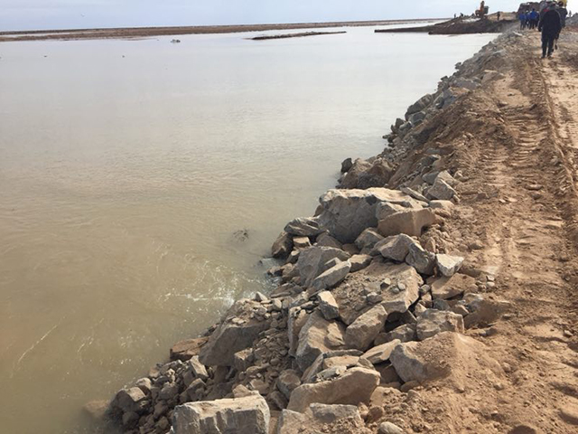

在青海省西部的格尔木市，有一处碧蓝的湖水，鬼斧神工般的雅丹地貌，天空鸭鸣雁啼，水上波光粼粼，朝阳橙霞，沙丘湖泊形成一幅美丽动人的画面，金色雅丹波光倒影，美不胜收。
这里原先并没有水。有一年，纳林格勒河暴发洪水，河水改道，流向这片宽阔的地域，形成了雅丹风光。因为在两个咸水湖中间，湖水微咸，湖中水草茂盛，引来了大量的水鸟，所以称之为：鸦湖。当地人久而久之又用同音字称之为：“鸭湖”。
假如有一天，纳林格勒河暴发洪水导致河水再次改道，或许这片神奇的水上雅丹奇观便不复存在。据格尔木市防讯办监测，7月28日至8月6日期间，鸦湖、东台吉乃尔盐湖及上游地区自有气象记录以来，遭遇了最为极端严峻的暴雨天气。尤其是鸦湖上游纳林格勒河因持续暴雨导致河水水量骤增，下泄水量超过12亿立方米，其中流入鸦湖的水量超过5亿立方米，大大超过鸦湖不到5亿立方米的警戒容量。8月14日中午12时30分许，鸦湖南坝溃口，鸦湖坝体难承其重，南坝脆弱处决堤无法避免。洪水来势之迅猛、短期水量之巨大，前所未有。

面对突如其来的灾情，青海东台吉乃尔锂资源股份有限公司全体员工依靠自身组织协调抗洪抢险。既要护大坝、堵溃口，更要守盐田、保资产。最大的困难和挑战是：没有抗洪经验、没有专业指导、短时间内抗洪抢险难度很大。超过220米宽、水深5-8米的大坝溃口合拢的工程技术难度可想而知。尽管困难重重，员工们依靠自己迎难而上，迅速组织展开生产自救和抗洪抢险工作。全力以赴，积极应对，使得机械调动、物资抢运、队伍组织、后勤支持等每个环节的紧密配合与协调协作，为抗洪抢险的顺利实施提供了重要保障。

抗洪期间，天气无常。水情时刻在变化，抢险措施同样每天都在及时调整。现场研判，果断实施。抢险过程中，从突发之初的措手不及，到重点区域的坚决抢护，有主动为之的安排，也有被动防御为之的调整，更有主动变被动为之的无奈。尤其在最后20米溃口的封堵合拢阶段，情况复杂难以控制，多种措施同时推进，调换队伍增加力量，群策群力协同配合。经过最后几天的不懈奋战，溃坝终于艰难封口。
这次鸦湖抗洪抢险，是由企业自主担负实施，这在青海省防汛史上是绝无仅有的。从8月14日鸦湖南坝溃口，到9月4日溃口封堵合拢成功，整整历时22个昼夜的抗洪抢险工作取得了第一阶段的胜利，度过了最为艰难的危机时间。在这22个昼夜中，青海东台吉乃尔锂资源公司调动全部资源和力量化解危害，其间经历和承受了巨大煎熬与身心疲惫，以及不分昼夜、连续作战的努力坚持。
9月6日，北大先行科技产业有限公司董事长高力亲临抗洪现场慰问抗洪抢险一线员工，鼓舞士气，提振信心，指导后续工作，为公司未来发展定良策，谋规划。也为公司员工带来了工作的动力和方向。
这次洪灾，对青海东台吉乃尔锂资源公司造成的危机和压力是空前的，考验也是十分现实残酷的。全体员工一切的努力与付出，带来了鸦湖及核心盐田（老卤池及成矿池）等核心资产安然无恙！这是希望所在，也是前进的基石！洪灾危机过后的工作依然繁重与艰巨，长治久安必须规划先行，需要努力消除隐患，为生产保驾护航。尽管短期内洪水造成了危害和损失，但隐患早释放，长远看利大于弊。风雨之后会见彩虹！ （王洪）